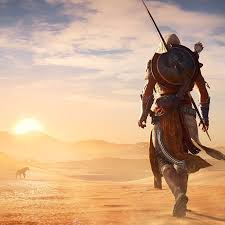
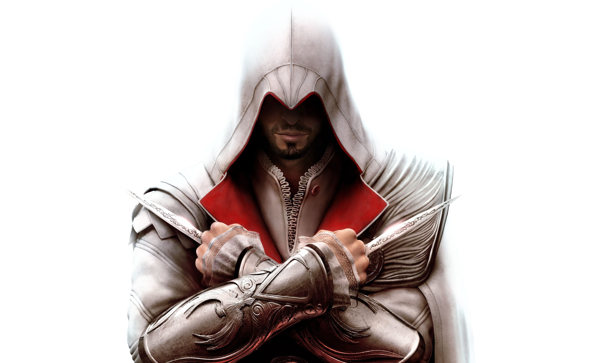
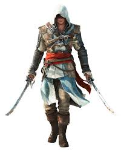

Entrenamiento oculto
Aprende cómo los asesinos se esconden entre la multitud, se mezclan con la gente y atacan en el momento exacto.
Explora los aspectos más importantes de Assassin's Creed: sigilo, historia y legado de los asesinos.
Aprende cómo los asesinos se esconden entre la multitud, se mezclan con la gente y atacan en el momento exacto.
Desde las cruzadas de Altair hasta el Renacimiento de Ezio y el Antiguo Egipto de Bayek, la saga cubre enormes periodos históricos.
Los jugadores reviven memorias de sus ancestros a través del Animus, explorando escenas reales y ficticias.
Artefactos antiguos, fragmentos del Edén y las batallas entre Assassins y Templars son el motor de cada juego.

Los primeros asesinos surgieron en el antiguo egipto aunque el nombre y apogeo de la orden se vería en las Cruzadas, defendiendo la libertad frente a templarios y poder duro.

Ezio Auditore amplía la Hermandad, construye alianzas y deja un legado que perdura hasta los días modernos siendo uno de los personajes mas iconicos de la saga.

Edward Kenway es el protagonista de Assassin's Creed IV: Black Flag, un pirata que se une a la Hermandad mientras navega por el Caribe en el siglo XVIII.
El juego muestra combates navales, saqueos en islas y su conflicto con templarios, además de su lucha por la libertad y el honor entre corsarios.